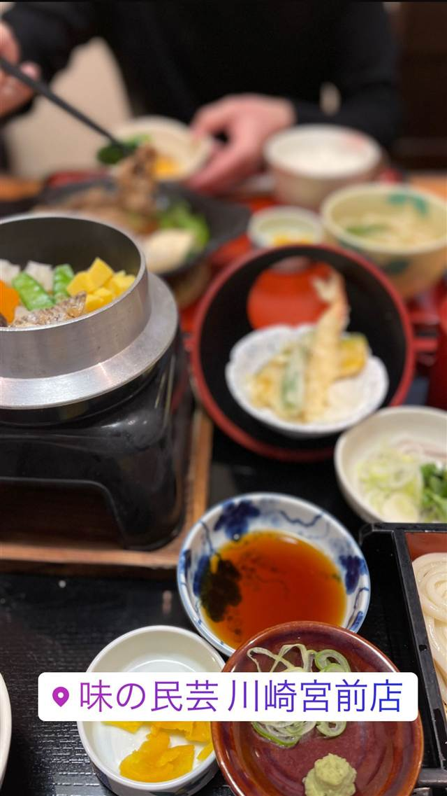

味の民芸 川崎宮前店
1976年に明星食品が始めた手延べうどんとばら寿司のセット
味の民芸 川崎宮前店
手延べうどんと定食の全国チェーン「味の民芸」。即席麺で知られる明星食品グループが1976年に岡山で立ち上げた外食事業がルーツで、薄味だしのうどんにばら寿司やかやくご飯を添えたセットメニューを関東圏にいち早く紹介した。現在は日清食品グループを経てサガミチェーングループの一員となっている。
TRIVIA
へえ、という話
- 即席麺の明星食品グループが1976年に立ち上げた外食事業がルーツ
- 現在はサガミチェーン（五味八珍などを展開）グループの一員
| 創業 | チェーンの前身「株式会社明星ブルック」は1964年設立、1976年に岡山で「味の民芸」として外食事業を開始 |
|---|---|
| 系譜 | 即席麺で知られる明星食品グループの新規事業として創業。2008年に日清食品グループ入りし社名を「味の民芸フードサービス」に変更、2014年以降は株式会社サガミチェーンのグループ企業 |
| 看板 | 手延べうどん、釜飯定食 |
| こだわり | 薄味だしの手延べうどんに、ばら寿司やかやくご飯を添えたセットメニューを関東圏にいち早く紹介 |
| 予算 | 昼 ¥1,000～¥1,999 夜 ¥1,000～¥1,999 |
| 場所 | たまプラーザ・宮崎台 神奈川県川崎市宮前区 |
| 注意 | 全国チェーンの和食麺処レストラン |
食べたもの：釜飯定食 / パフェ
NEARBY
近い店・同じ系統の店
-
 パスタ たまプラーザ
ItalianLodge TEN（イタリアンロッジ テン）
山小屋風の隠れ家で味わう揚げナスのせ自家製ミートソースパスタ
昼 ¥1,000～¥1,999 夜 ¥4,000～¥4,999
パスタ たまプラーザ
ItalianLodge TEN（イタリアンロッジ テン）
山小屋風の隠れ家で味わう揚げナスのせ自家製ミートソースパスタ
昼 ¥1,000～¥1,999 夜 ¥4,000～¥4,999
-
 ハワイ たまプラーザ
メレンゲ たまプラーザ店（Merengue）
メレンゲ使用のふわふわパンケーキとロコモコが名物のハワイアン
昼 ¥1,000～¥1,999 夜 ¥1,000～¥1,999
ハワイ たまプラーザ
メレンゲ たまプラーザ店（Merengue）
メレンゲ使用のふわふわパンケーキとロコモコが名物のハワイアン
昼 ¥1,000～¥1,999 夜 ¥1,000～¥1,999
-
 サラダ たまプラーザ駅
Petite Notes（プティットノット）
花屋併設のアンティーク調カフェで味わうキッシュとサラダ
昼 ¥1,000～¥1,999 夜 ¥1,000～¥1,999
サラダ たまプラーザ駅
Petite Notes（プティットノット）
花屋併設のアンティーク調カフェで味わうキッシュとサラダ
昼 ¥1,000～¥1,999 夜 ¥1,000～¥1,999
-
 とんかつ たまプラーザ
名代とんかつ かつくら 東急百貨店たまプラーザ店
ご飯もキャベツも味噌汁もおかわり自由、京都発のとんかつ
昼 ～¥1,999 夜 ¥2,000～¥2,999
とんかつ たまプラーザ
名代とんかつ かつくら 東急百貨店たまプラーザ店
ご飯もキャベツも味噌汁もおかわり自由、京都発のとんかつ
昼 ～¥1,999 夜 ¥2,000～¥2,999
-
 バー たまプラーザ
Troubadour（トルバドール）
1970年代LAの伝説的音楽クラブを再現した内装でルーベンサンド
昼 ¥1,000～¥1,999 夜 ¥4,000～¥4,999
バー たまプラーザ
Troubadour（トルバドール）
1970年代LAの伝説的音楽クラブを再現した内装でルーベンサンド
昼 ¥1,000～¥1,999 夜 ¥4,000～¥4,999
-
 ベーカリー たまプラーザ
MELON LAB. たまプラ店
千葉・野田市発、全国70店以上に広がったメロンパン専門店
昼 ～¥999 夜 ～¥999
ベーカリー たまプラーザ
MELON LAB. たまプラ店
千葉・野田市発、全国70店以上に広がったメロンパン専門店
昼 ～¥999 夜 ～¥999